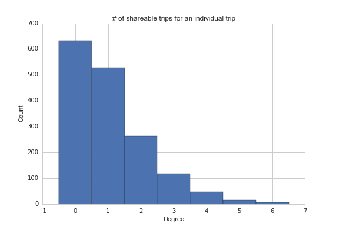
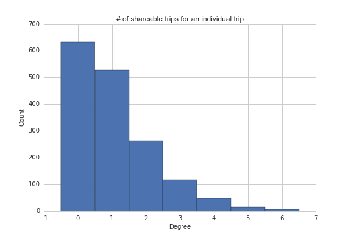

Getting the Data
We obtain our raw taxi trips data from the
New York City Taxi & Limousine Commission (NYC TLC). The TLC, created in 1971, is the agency responsible for licensing and regulating New York City's taxicabs, for-hire vehicles, commuter vans, paratransit vehicles and certain luxury limousines. It has recently made the city's taxi trips
available for download from its website.

The data come in CSV format, grouped by month. Each row is an individual taxi trip, and contains information on the trip's pick-up and drop-off times and location (latitude & longitude cordinates), distance, passenger count (reported by the driver), and the fare charged. Data for Yellow Taxis and Green Taxis are stored in separate files.
As New York City taxi trip patterns are cyclical and consistent in volume week-to-week (barring holidays, special events, and adverse weather), just one week of data would be more than adequate for our analysis. We pick the week of October 5, 2015 (Monday) through October 11, 2015 (Sunday) -- a week without any holidays and when the weather is mild in New York.
Processing the Data
The next step is to clean the data, filtering the [TOTAL NUMBER OF TRIPS IN OCTOBER] trips in October down to only trips that:
- fall within October 5 and October 11, 2015
- start or end within a radius of 150 meters of Flushing Main Street station, the public transport hub of our exercise
- last more than 1 minute
- have different pick-up and drop-off locations
- are than 5 miles (about 8 km)
Criteria #3 and #4 intend to remove noise in the data. Criteria #5 is in place because we presume that people are unlikely to use taxis as a first/last-mile solution if they are more than 5 miles away from the public transport station -- they might instead of chosen to drive instead.
We use R to do all the filtering, and export the output as 2 CSV files -- one for trips picked up near Flushing station, another for trips dropped off near the station. The GISTools and rgdal packages allow us to perform spatial queries right in R -- neat!
Analyzing Shareability
Which trips can be shared? We use routing and an assumed maximum delay threshold, implemented in Python with the Google Maps Directions API, to check for the "shareability" of any two trips. In this exercise, we assume that a trip can only be shared with at most one other trip, and the only factors that deterine shareability are: 1) the difference in travel time (wait time + in-vehicle travel time) with vs without sharing, for either passenger, does not exceed the maximum delay assumed; and 2) the total number of passenger in a shared trip do not exceed 5, the max capacity of New York taxicabs.
For trips picked up near Flushing station:
- D = delay threshold (minutes)
- S = set of all trips
- TOi = Pick-up time for Trip i
- T1i = Travle time for Trip i, under unshared scenario
- T2i = Travle time for Trip i, shared scenario
- Di = Dropoff location for Trip i

For every trip i in S, we pair it with trip j provided |TOj - TOi| <= D. We call TOj - TOi = Delta.
We check which dropoff location is geographically closer to Flushing Station. Call this closer drop-off W (for waypoint), and the other destiation Dest.
We call Google Maps Directions API, with origin = location of Flushing Station, destination = Dest, and W as a Waypoint. Google Directions API can accommodate up to 23 waypoints. The returned results include the travel times for each of the 2 legs: station - W, W to Dest.
We calculate T2i and T2j, the new travel time for each trip in the sharing scenario. For the Trip that started first, we also add Delta to the travel time.
If T2i - T1i <= D AND T2j - T1j <= D, we note in a dictionary that Tj and Ti are shareable.

The result of this exercise is a dictionary, with each trip ID as the key, and all the shareable trips with that particular trip as the value. We represent this as a graph using Python's Networkx library. In this grpah, each trip is a node; if two trips are shareable, an edge links up these two nodes. The initial shareability network looks like the following:
 The histogram below shows that about 1,200 trips (degree > 0) can be shared with at least 1 trip.

Only one more step remaining! Many trips can be shared with more than 1 trip, but in reality (and under our max 2-trip sharing assumption), every trip can only be shared with another trip simultaneously. So we perform the maximum matching algorithm on the shareability graph. The resulting graph ensures that each node has at most only 1 edge. Et voila!
The histogram below shows that about 1,200 trips (degree > 0) can be shared with at least 1 trip.

Only one more step remaining! Many trips can be shared with more than 1 trip, but in reality (and under our max 2-trip sharing assumption), every trip can only be shared with another trip simultaneously. So we perform the maximum matching algorithm on the shareability graph. The resulting graph ensures that each node has at most only 1 edge. Et voila!
For trips with destination near Flushing station, simply apply the logic in reverse logic, using the same tools.
Visualizing the Data
In order to visuaulize the different trip sharing scenarios, each scenarios trips were re-routed using the Mapzen Valhalla routing engine. For trips picked up at Flushing-Main Street Station, the origin latitude and longitude were standardeized across all trips, removing the variabilty of passengers getting picked up from different spots around thte station. Likewise, for all trips dropping off at the station, the destination latitude and longitude were set to be the same point. This allowed all of the routes to be stacked on top of eachother. Each road block was assigned an attribute of how many trips used that segment in their routing. This was done using a PL/PostGIS script in CartoDB, inspired a methodology developed by cartographers at CartoDB.